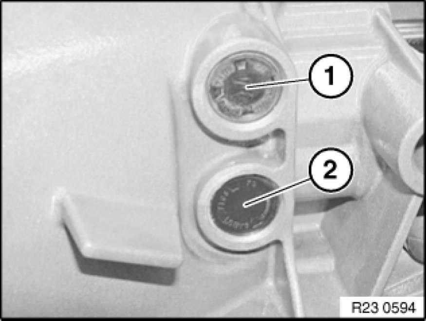
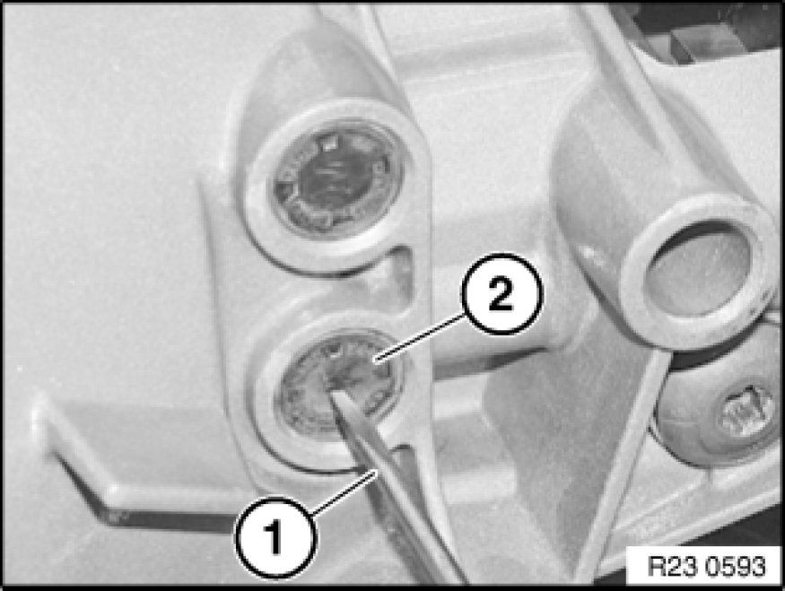
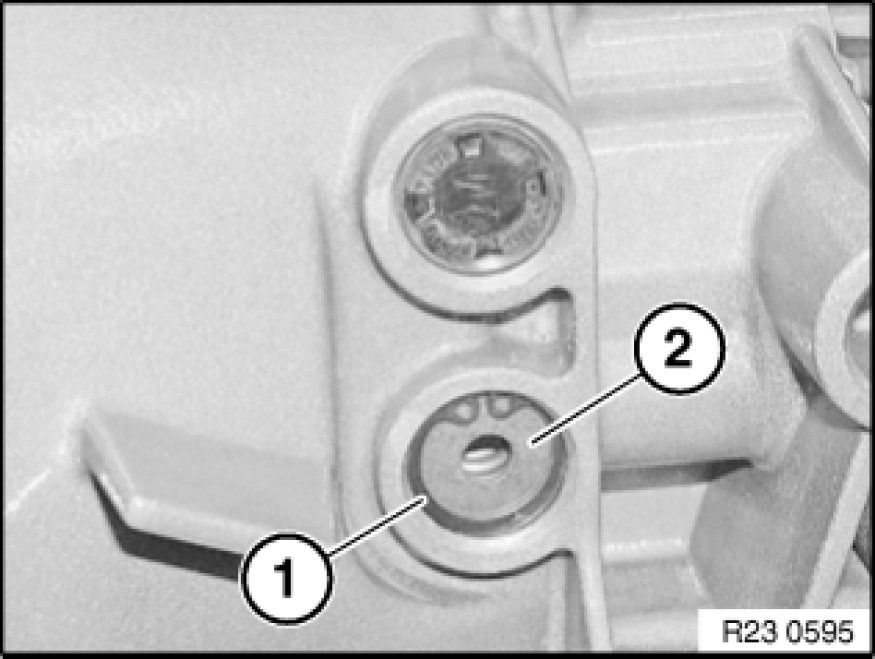
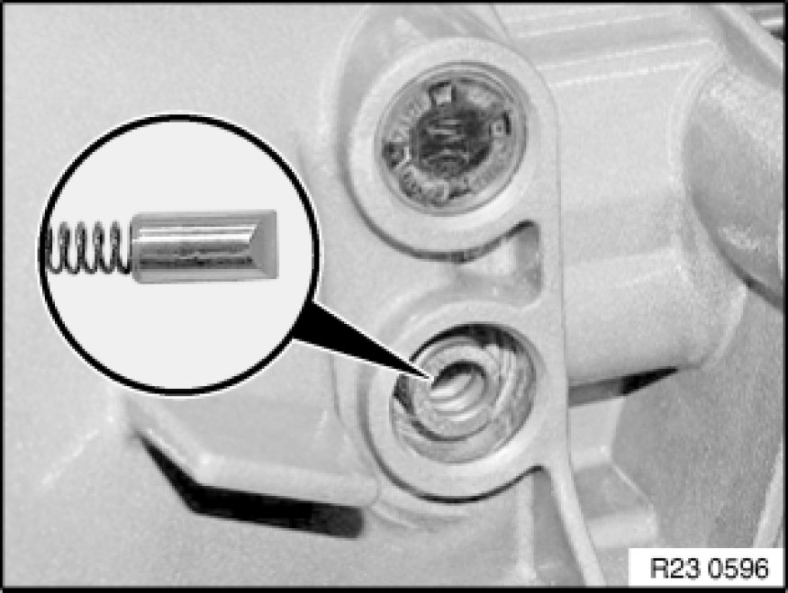
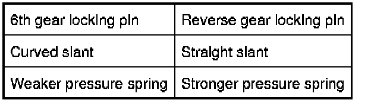
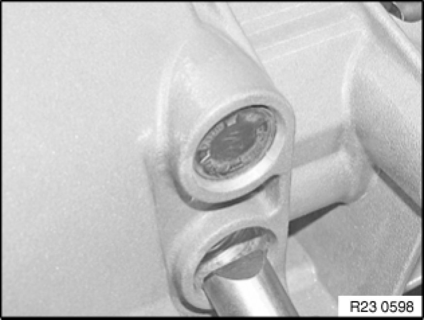
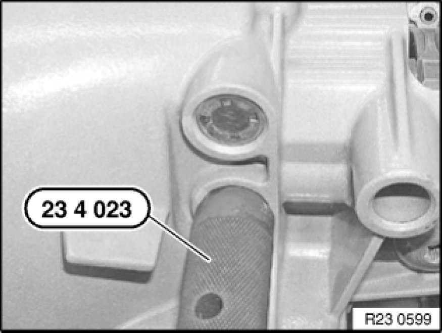
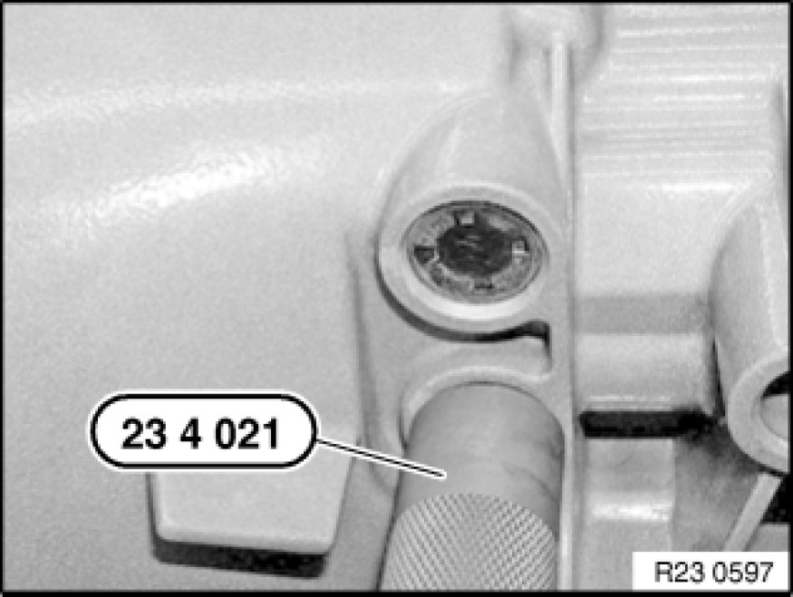

Shifter Detent Spring: Service and Repair
23 31 545 - Replacing both locking pins for 6th / reverse gear (I transmission) - transmission removed

Special tools required:
- 23 4 021
- 23 4 023

Note:
1=Locking pin for 6th gear
2=Locking pin for reverse gear

Using a suitable tool (1), drive hole into sealing cap (2) and lever out of housing.
Important!
Bore hold must not be damaged. A burr or a dent can cause the sealing cap to leak.
Installation:
Replacing sealing cap (2).
Note:
Illustration shows: Sealing cap for reverse gear

Remove retaining ring (1) and washer (2).

Remove pressure spring and locking pin.
Important!
Pressure springs and locking pins for 6th gear
reverse gear must not be mixed up.

Note:
Illustration shows: Reverse gear pressure spring!

Installation:
6th gear locking pin:
Bevel must point in bell housing downwards to
reverse gear!
Reverse gear locking pin:
Bevel must point in bell housing upwards to
6th gear!

Using special tool 23 4 023 , drive locking pin with pressure spring, washer and retaining ring simultaneously into housing.

Drive in sealing cap (1) with special tool 23 4 021 .